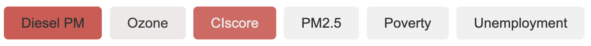
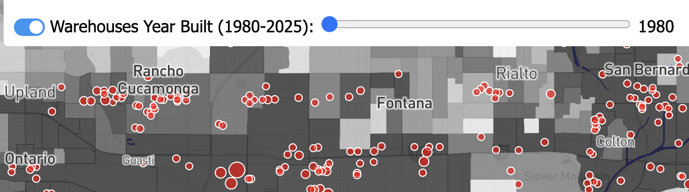
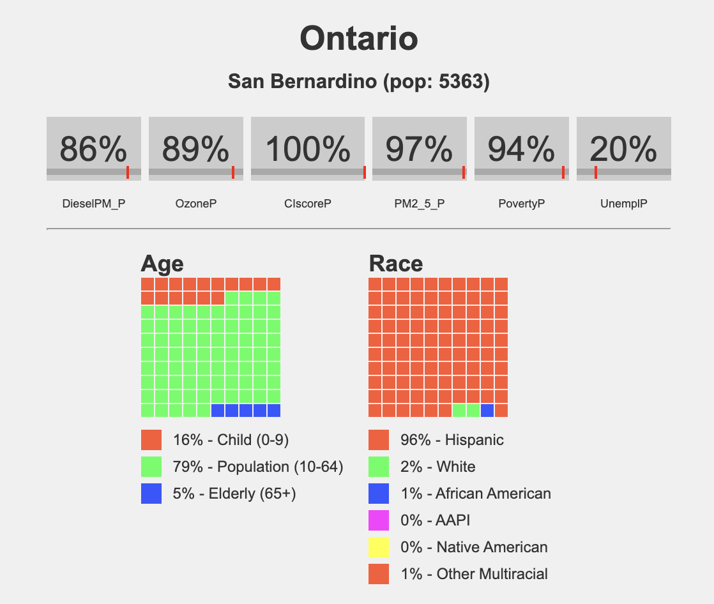

How to Use the Maproom
The Inland Empire Environmental Maproom provides powerful tools to explore environmental challenges in the region. This guide explains the key features and how to interact with them effectively.
Interactive Environmental Layers
The Maproom allows you to explore various environmental metrics using a set of interactive buttons. Each button corresponds to a specific environmental factor, such as Diesel PM, Ozone, or PM2.5.
Choosing Environmental Layers
- Red Buttons: Select different environmental layers, as shown below:

Clicking a button activates the associated layer on the map, allowing you to view and analyze data for that specific environmental factor.
Warehouses and Time Navigation
 The Maproom includes a dynamic feature to toggle warehouse data on and off. When turned on, you can use the time bar to explore warehouses built by year.
How to Use This Feature:
- Toggle Warehouses: Turn the warehouse layer on using the control panel.
- Navigate Time: Use the time bar to visualize changes in warehouse density over different years.
This feature helps you analyze trends in industrial development and their potential impacts on the surrounding environment.
Census Tract Profiles
 Hovering over census tracts dynamically generates mini-community profiles. These profiles provide detailed environmental metrics and demographic data for the selected area.
Information Included:
- Environmental Metrics: Displays values for factors such as air quality, pollution levels, and environmental risks.
- Demographics: Includes age and race distributions for the selected census tract.
This feature is ideal for identifying how environmental challenges disproportionately impact certain communities.
Explore the Maproom
Use the tools above to dive deep into the environmental and demographic data affecting California’s Inland Empire. Click the button below to get started: